Gulp
A bold, high-contrast identity for a "liquid salad" green juice brand — built to make a slightly odd pitch (drinking your vegetables) feel confident and a little funny, instead of earnest and wellness-generic.
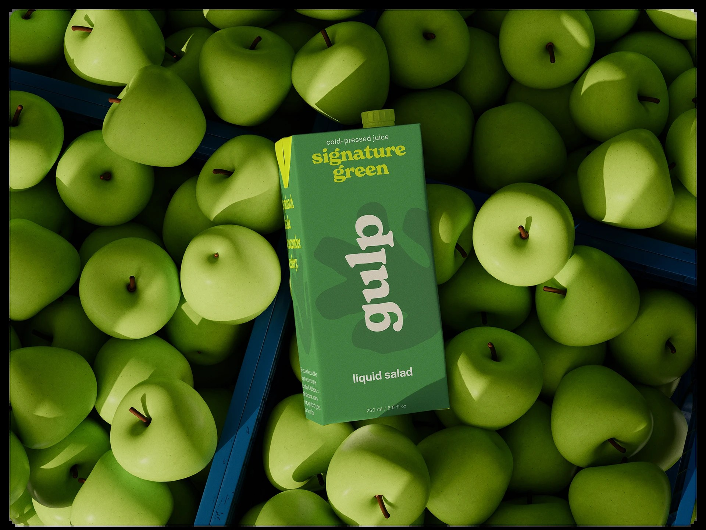
The brief
Green juice branding tends to default to one mood: soft, earnest, slightly precious wellness language. Gulp needed to feel like the opposite of that — blunt, funny, a little confrontational ("Don't chew. Just Gulp.") — while still reading as a genuinely premium product on a shelf, a storefront window, and a delivery box.
Identity & color system
The mark is a simple leaf-shaped hand icon paired with a rounded, friendly wordmark — built to scale from a tiny packaging tag down to a single-color stamp on shipping tape. The palette is deliberately loud: Neon Lime as the dominant attention-getter, balanced by Forest Green, Dark Green, Olive and Cream, with a Light Blue held in reserve for high-contrast "statement" moments.
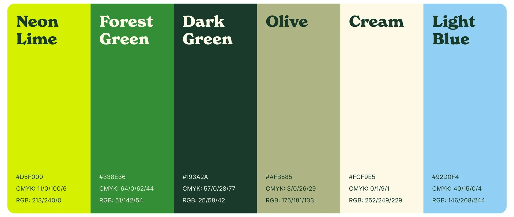
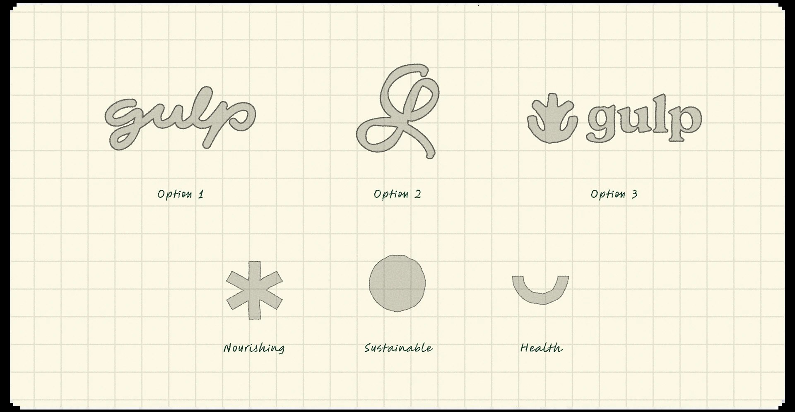
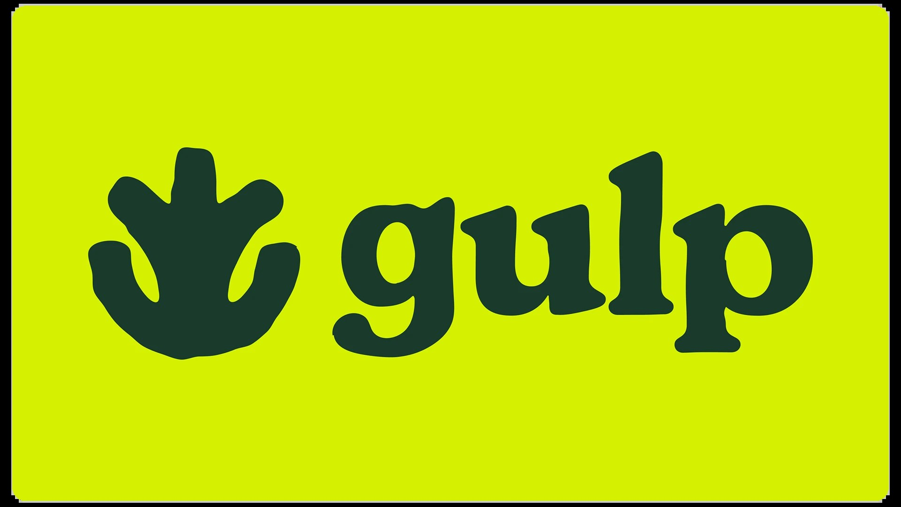
Packaging & voice
Packaging needed to work both as a product shot (next to the actual vegetables it's made from) and as a billboard-scale piece of copywriting. The tone of voice — "Don't chew. Just Gulp.", "Health. without drama." — carries as much of the brand as the visual system does.
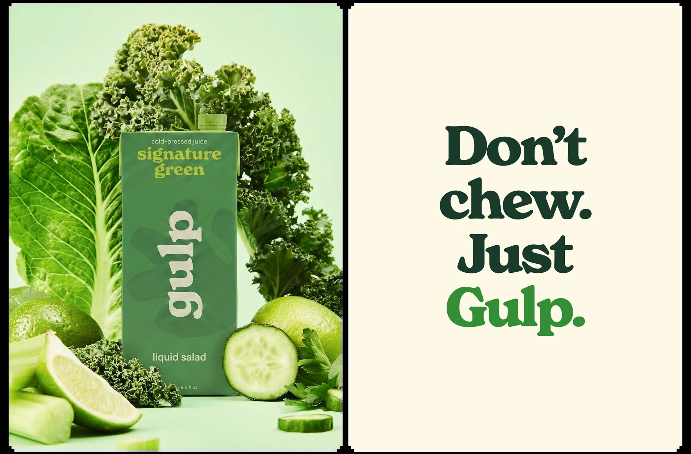
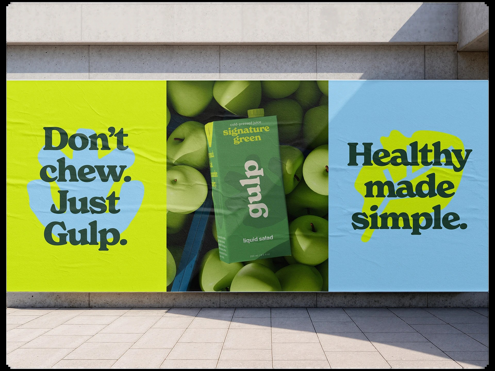
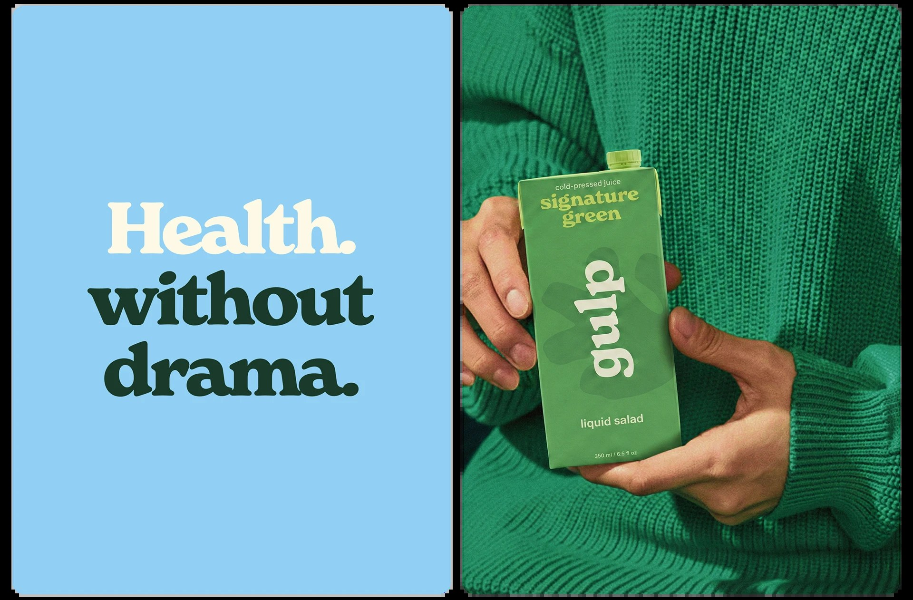
Applications
From there the system extends into social content, merchandise and shipping — an ingredient icon set (spinach, cucumber, kale, celery), a canvas tote, branded shipping tape, stacked delivery boxes with real waybill and batch-number details, and a business card for the brand's (fictional) "Head Squeezer."
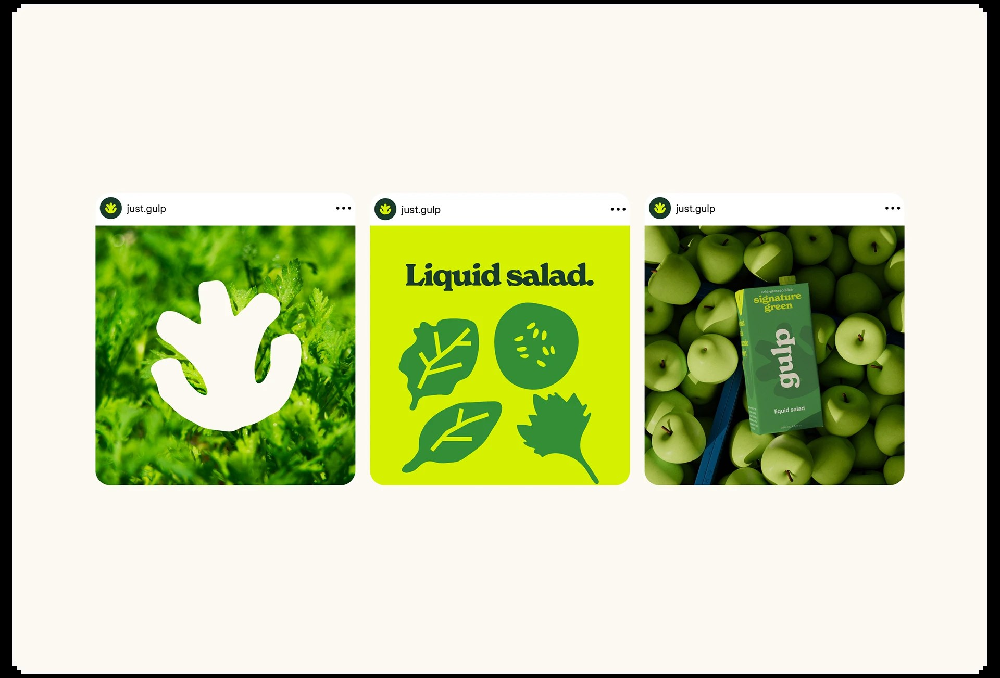
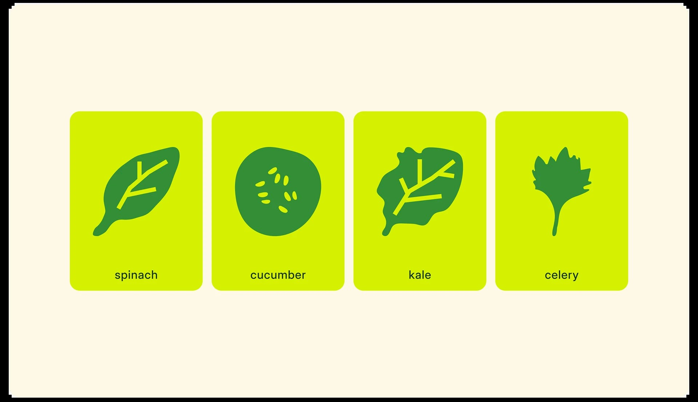
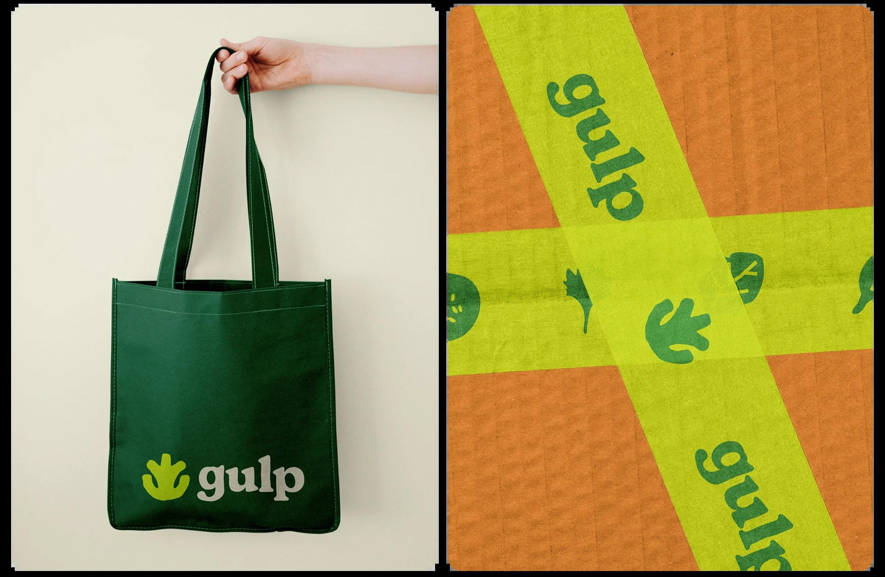
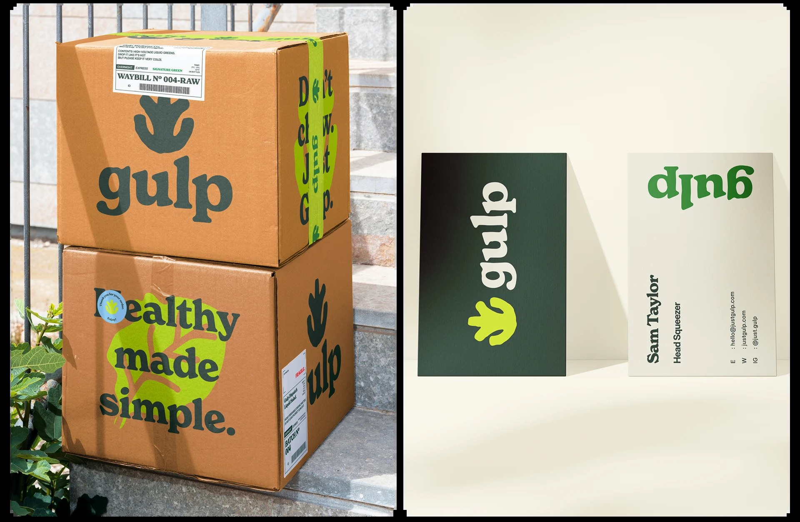
Outcome
A complete identity that commits to a specific tone of voice rather than defaulting to generic wellness branding — carried consistently from packaging through out-of-home advertising, social content, merchandise and shipping materials.
The real design decision here was tonal, not visual — choosing blunt, funny copy over wellness-brand softness, then making sure the visual system (loud lime, confident type) backed that choice up instead of undercutting it.